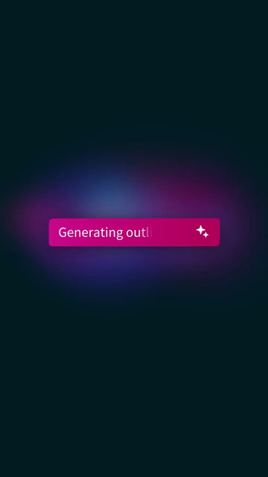
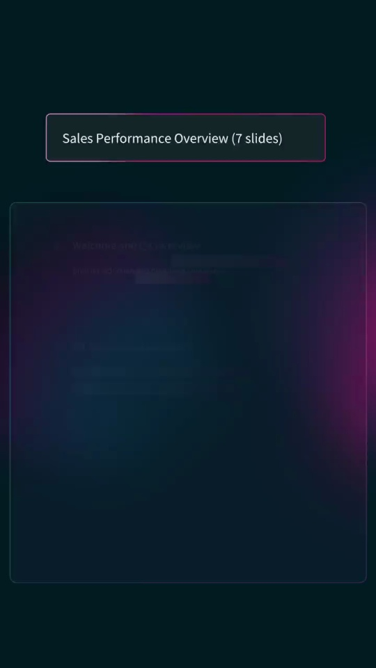
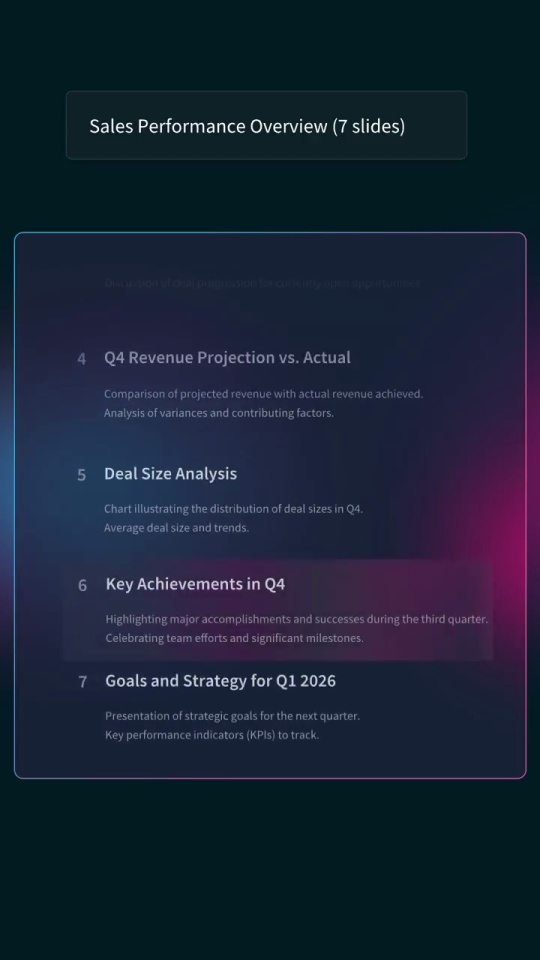
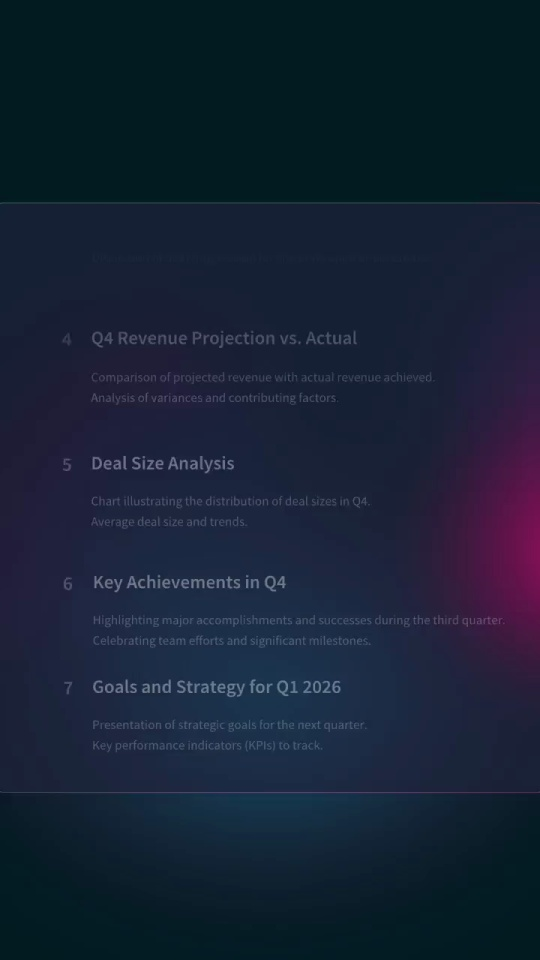

Beautiful.ai / V370
用 AI 创建演示文稿
先把主题变成可编辑大纲，再把大纲变成一组完整幻灯片，让两次生成各有清楚结果。
构图与编排 可播放 · 可替换内容
整体编排规则示例
查看 HTML 源码
<!doctype html><html lang="zh-CN"><meta charset="utf-8"><meta name="viewport" content="width=device-width,initial-scale=1"><title>用 AI 创建演示文稿 · sequence</title><style>html,body{margin:0;width:100%;height:100%;overflow:hidden;background:#032329}canvas{display:block;width:100%;height:100%;object-fit:contain}</style><body data-mode="sequence"><canvas width="1000" height="600"></canvas><script src="data.js"></script><script src="common.js"></script><script src="scene.js"></script><script src="bridge.js"></script></body></html>画面元素提示胶囊大纲条目编辑浮层生成状态幻灯片网格
MOTION LANGUAGE
动作与构图
局部动作 · 构图规则
01
大纲是第一次生成的交付
大纲是第一次生成的交付规则示例
查看 HTML 源码
<!doctype html><html lang="zh-CN"><meta charset="utf-8"><meta name="viewport" content="width=device-width,initial-scale=1"><title>用 AI 创建演示文稿 · sequence</title><style>html,body{margin:0;width:100%;height:100%;overflow:hidden;background:#032329}canvas{display:block;width:100%;height:100%;object-fit:contain}</style><body data-mode="clip" data-start="5.8" data-end="13.5"><canvas width="1000" height="600"></canvas><script src="data.js"></script><script src="common.js"></script><script src="scene.js"></script><script src="bridge.js"></script></body></html>输入主题之后先出现章节列表，编辑某个条目时浮层贴近对应行。确认列表后才进入幻灯片生成，章节顺序贯穿到成品。
02
从骨架变成真实版式
先出现每页内容框，再依次填标题、图表、色块与数字。成品以多格缩略图平铺，保持页面宽高比，避免列表和成品同时抢占画面。
03
暗青舞台与紫红光强调生成
输入和状态用紫红光晕，工作区使用较暗半透明面板。无衬线列表文字保持清楚，幻灯片可引入蓝、橙等内容色；竖版上下排列留出稳定边距。
04
替换主题时同时准备大纲与页内容
选择能用图表、要点和数据页表达的主题，保持章节标题与成品一致。长标题需要换行，不能只缩成难读小字。
SEQUENCE
段落与节奏
点击段落，定位到上方编排示意。




画面参考 · 离散静帧
KEEP THE RELATIONSHIPS
制作其他主题
- 选择能用图表、要点和数据页表达的主题，保持章节标题与成品一致。长标题需要换行，不能只缩成难读小字。
制作约束
提示胶囊 / 大纲条目 / 编辑浮层 / 生成状态 / 幻灯片网格
- 先把主题变成可编辑大纲，再把大纲变成一组完整幻灯片，让两次生成各有清楚结果。
- 输入主题之后先出现章节列表，编辑某个条目时浮层贴近对应行。确认列表后才进入幻灯片生成，章节顺序贯穿到成品。
- 先出现每页内容框，再依次填标题、图表、色块与数字。成品以多格缩略图平铺，保持页面宽高比，避免列表和成品同时抢占画面。